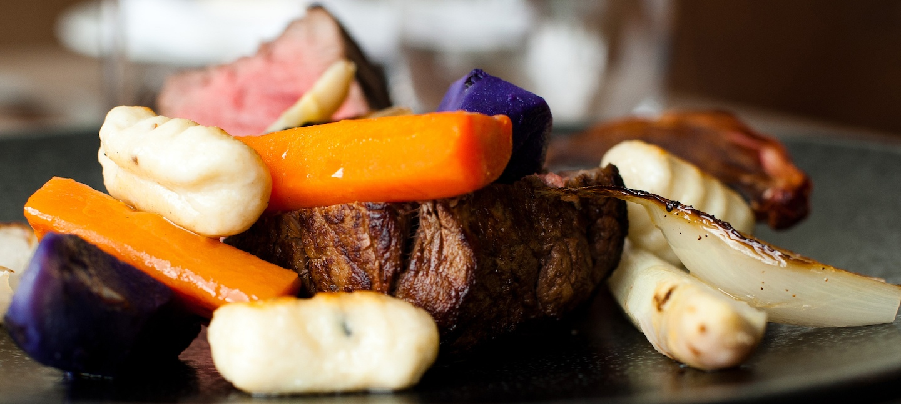

Kerry - A Kingdom far, far away.
The ancient force that has been the catalyst for cosmic change has found its home in the Kingdom.
Discover this mystical, mythical location and its exotic set of light and darkside characters.
Kerry blends the traditional, modern and wild aspects of our nature; its is a Force to be reckoned with!
Imbue your character with Kerry's Force and become your own JEDI Knight.
Satisfy your Galaxy Appetite
Cosmic - Food and Drink
Combating the Sith with your light saber skills requires energy.
Get prepared for battle with our Kerry Galaxy Oysters.
They will give your the power to project force lighting!

This appetite destroying dish will quell your dark side hunger.
Our Kerry beef contains all the nutrients and power required to survive the Kessel run.
The Kerry tempeture is similar to the Hoth system, you need more than a jumper, you need.
Traditional Kerry lamb stew. Piping hot to protects you from the Atlantic chill.